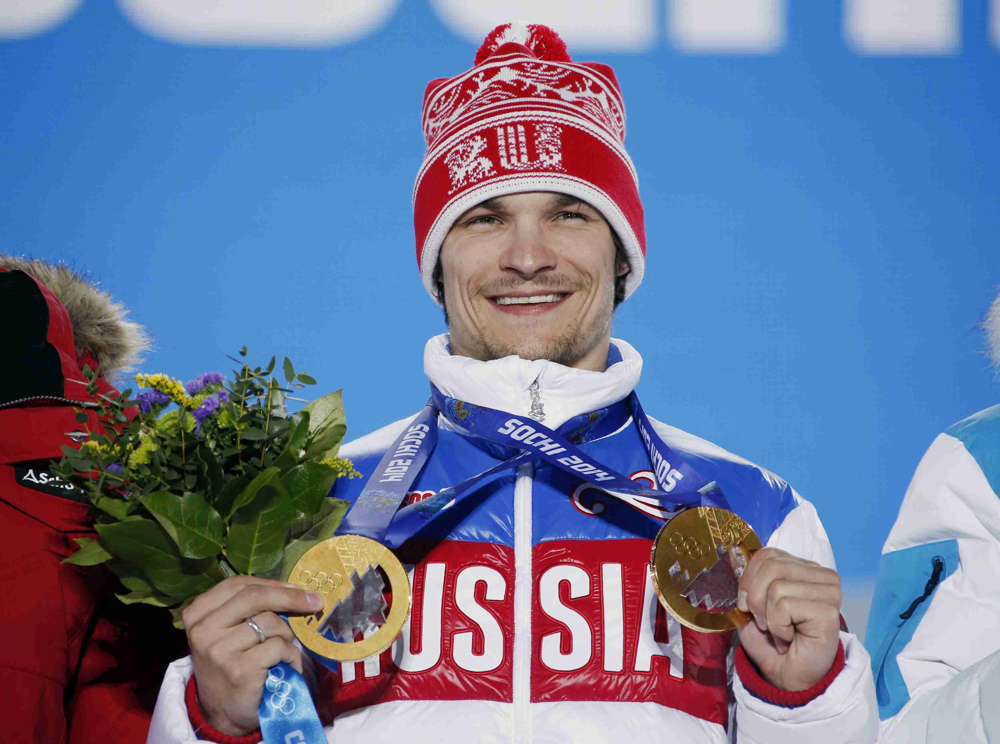

Сноуборд
Победитель: Вик Уайлд
Россиянин Вик Уайлд завоевал золото Олимпиады в Сочи в параллельном слаломе. В первом из двух финальных заездов он выиграл у словенца Жана Кошира 0,12 секунды, а во втором удержал это преимущество. Бронзовым призером Игр стал австриец Беньямин Карл. Это золото стало для Уайлда вторым в Сочи.